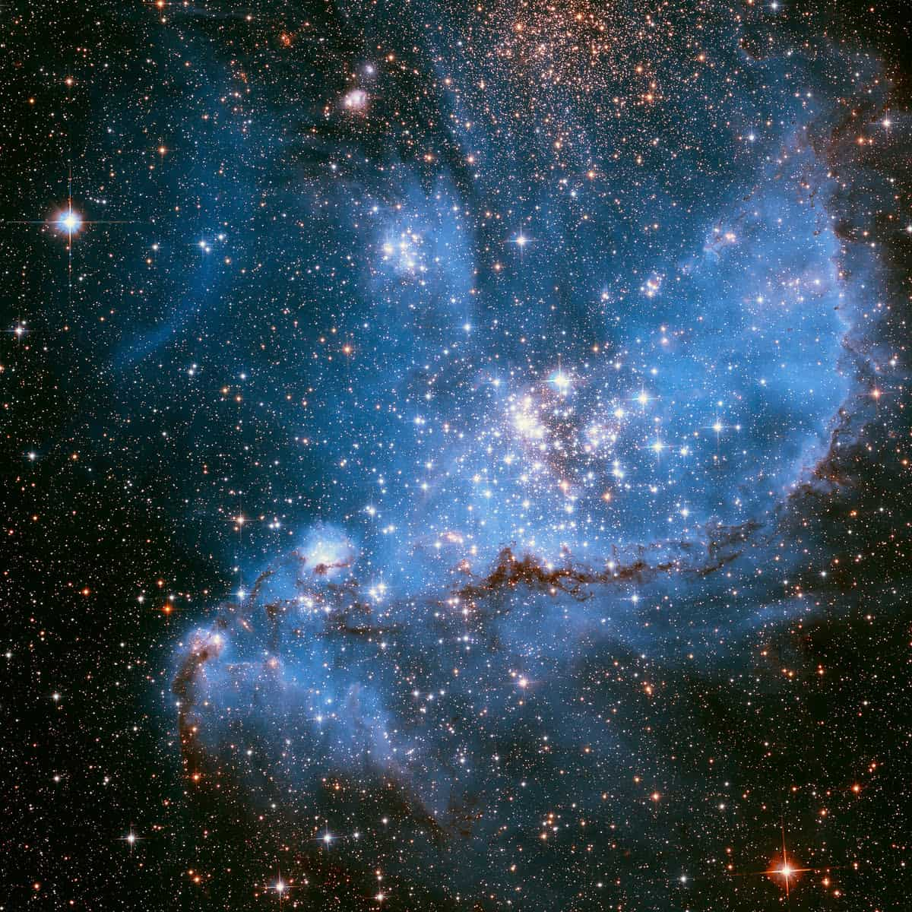

Guia das Galáxias

Galáxia Nuvem de Magalhães
Descrição
A Nuvem de Magalhães (SMC, do inglês Small Magellanic Cloud) é uma galáxia anã irregular, vizinha da Via Láctea, visível a olho nu no Hemisfério Sul.
Dados Interessantes
- Possui cerca de 7.000 a 15.000 anos-luz de diâmetro (algumas estimativas indicam cerca de 18.900 anos-luz de extensão total em estruturas de borda).
- É considerada uma galáxia anã irregular, mas estudos recentes sugerem que ela pode ser composta por duas galáxias distintas, uma atrás da outra, interligadas e interagindo com a Grande Nuvem de Magalhães.
- No céu, ela parece uma "nuvem" de luz, com um tamanho angular cerca de 8 vezes o diâmetro da Lua cheia